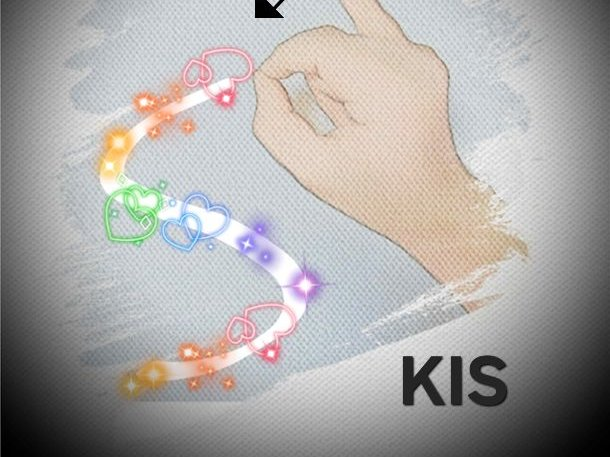
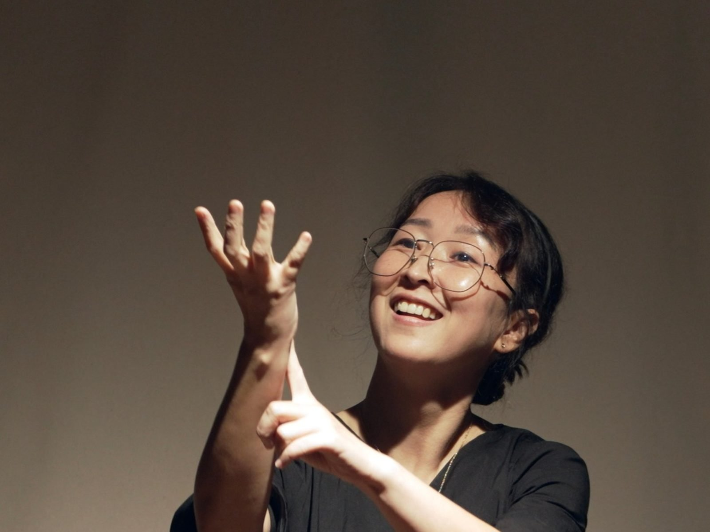

〈웰컴 투 데프 월드〉 전시
Welcome to Deaf World Exhibitions
《欢迎来到聋人世界》展览
일시 10. 31.(토) 10:00~17:30 · 장소 모두예술극장 모두스튜디오
손과 몸의 움직임이 문자와 그림, 문학이 되는 순간을 만나 보세요.
Oct 31 (Sat) 10:00–17:30 · Modu Studio, Modu Art Theater
Experience the moment when movements of hands and body become writing, painting and literature.
10月31日（周六）10:00–17:30 · 摩杜艺术剧场 摩杜工作室
体验手与身体的动作化为文字、绘画与文学的瞬间。
수어문자 전시 및 해설
Sign Writing Exhibition & Guided Commentary
手语书写展览及解说
김인선
Kim In-sun
金仁善
한국어 음성 언어를 한글로 기록하듯, 수어문자(SignWriting)로 기록한 한국수어를 소개합니다.
Just as spoken Korean is written in Hangul, this exhibition presents Korean Sign Language recorded in SignWriting.
正如用谚文记录韩语口语一样，本展览介绍用手语书写（SignWriting）记录的韩国手语。
수어 문학 중 수어 시(Sign Language Poem) 영상을 수어문자로 전사한 결과물을 전시합니다. 수어문자는 수어의 형태와 움직임을 그대로 표기할 수 있는 기호 체계입니다. 한국어 번역문이 아닌 수어문자 표기문을 보며, 수어로 표현할 수 있는 특성을 이해하고 수어를 기록할 때 수어문자를 활용할 수 있음을 알려줍니다.
The exhibition shows sign language poems from sign literature, transcribed into SignWriting. SignWriting is a symbol system that records the shape and movement of sign language as they are. Looking at SignWriting texts rather than Korean translations, visitors can understand what sign language can express and see how SignWriting can be used to record sign language.
本展览展示从手语文学中选取的手语诗（Sign Language Poem）视频，并将其转写为手语书写的成果。手语书写是一套能够如实记录手语形态与动作的符号体系。观众通过阅读手语书写文本而非韩语译文，可以理解手语的表现特点，并了解在记录手语时如何运用手语书写。

한 공간, 시선의 온도
A Space, the Temperature of Gaze
一个空间，视线的温度
청홍
Cheong-hong
清红
농인의 언어와 문화, 삶의 경험을 담은 데비아(De'VIA) 작품을 만나 보는 전시입니다.
An exhibition of De'VIA works that carry Deaf language, culture and life experience.
一场展览，汇集承载聋人语言、文化与生活经验的 De'VIA（聋人视觉艺术）作品。
이번 전시는 데비아의 역사와 의미를 소개하고, 관련 작품을 통해 데비아에 대한 이해를 넓히고자 합니다. 농인으로 살아가며 경험한 소통의 방식과 시선, 사회 속에서 마주한 편견과 감정을 표현한 개인 작품을 선보입니다. 농인의 시선으로 바라본 세상과 그 안에 담긴 다양한 생각을 관람객과 나누고자 합니다.
This exhibition introduces the history and meaning of De'VIA and deepens understanding of it through related works. It presents personal works that express the ways of communicating, the perspectives, and the prejudices and emotions encountered in society as a Deaf person. Through them, it aims to share with visitors the world as seen through Deaf eyes and the many thoughts it holds.
本次展览介绍 De'VIA 的历史与意义，并通过相关作品加深对其的理解。展出个人作品，表达聋人生活中的沟通方式、观看视角，以及在社会中遭遇的偏见与情感。我们希望与观众分享从聋人视角所看到的世界，以及其中蕴含的种种思考。

수어문학 전시
Sign Literature Exhibition
手语文学展览
수어민들레
Sueo Mindeulle
手语蒲公英
농인의 언어인 수어로 창작된 다양한 수어문학 작품을 만나는 시간입니다.
A time to meet diverse sign literature works created in sign language, the language of Deaf people.
在这里，您可以欣赏用聋人语言——手语——创作的多种手语文学作品。
수어문학은 수어시를 비롯해 수어이야기, 비주얼 버내큘러(Visual Vernacular, VV), 수어연극 등 다양한 장르로 이루어져 있습니다. 손과 몸의 움직임과 표정, 공간의 활용을 통해 이야기를 전하고 감정을 표현하는 수어문학의 매력을 보여 드립니다. 수어가 지닌 예술적 가능성과 시각적 언어의 아름다움을 발견하는 기회입니다.
Sign literature includes sign poetry, sign stories, Visual Vernacular (VV), sign theatre and more. Through the movement of hands and body, facial expression and use of space, it conveys stories and emotions. This exhibition offers a chance to discover the artistic potential of sign language and the beauty of visual language.
手语文学包括手语诗、手语故事、视觉方言（VV）、手语剧等多种形式。通过手和身体的动作、表情与空间的运用来讲述故事、表达情感。本展览让您有机会发现手语的艺术潜力与视觉语言之美。
